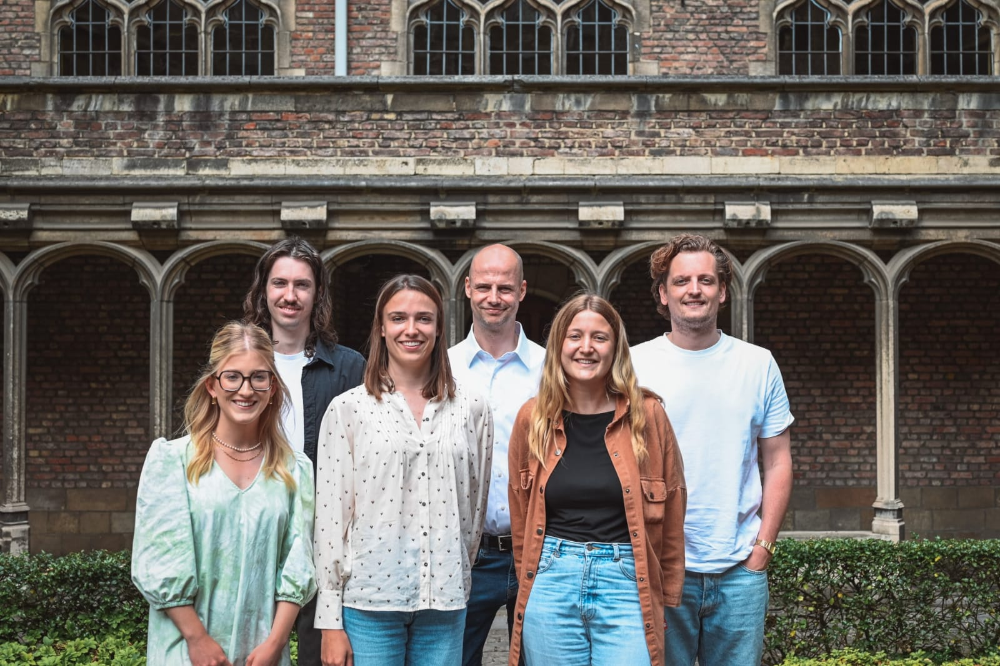

About Us
The Applied Data Mining Research Group works on the development and use of data mining techniques for a better decision making process. A specific focus lies with explainable AI and building predictive models using fine-grained, massive behavior data, such as payment, location or website visitation data. The Applied Data Mining Research Group is part of the Department of Engineering Management.
